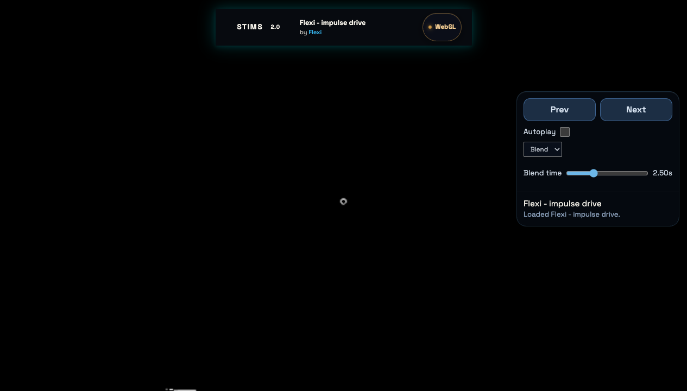

Flexi - impulse drive
flexi-impulse-drive
performance-regression · 3.6 fps · 0.0167 frame delta
Frame rate 3.6 is below 30 fps
Canonical route: /?agent=true. Results are ranked by impact.

flexi-impulse-drive
performance-regression · 3.6 fps · 0.0167 frame delta
Frame rate 3.6 is below 30 fps